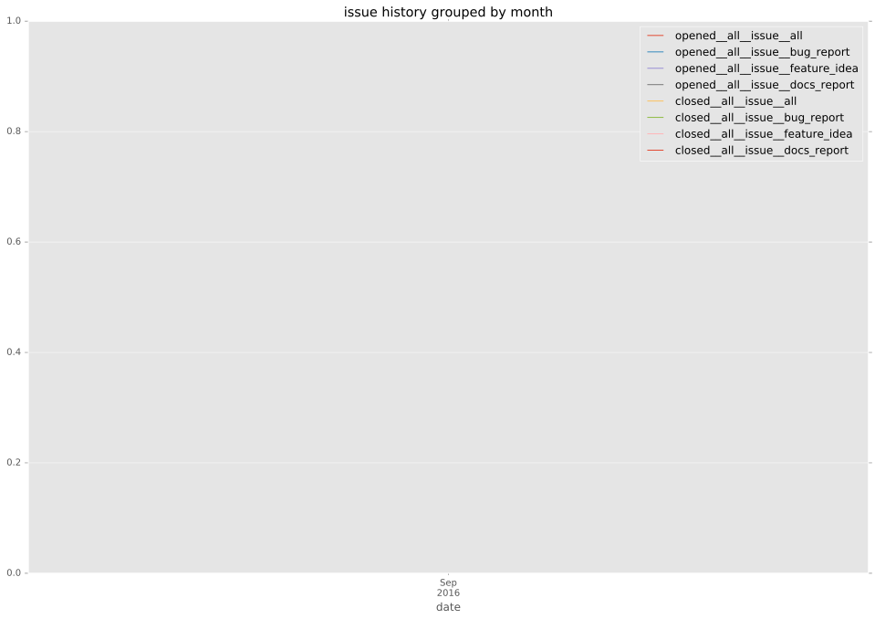
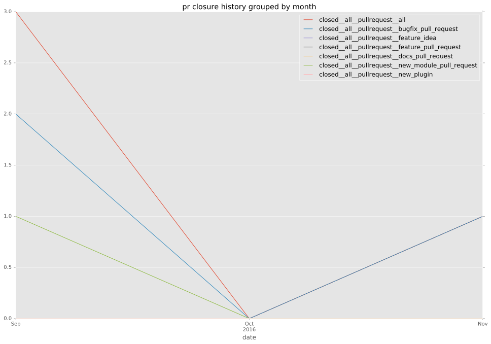
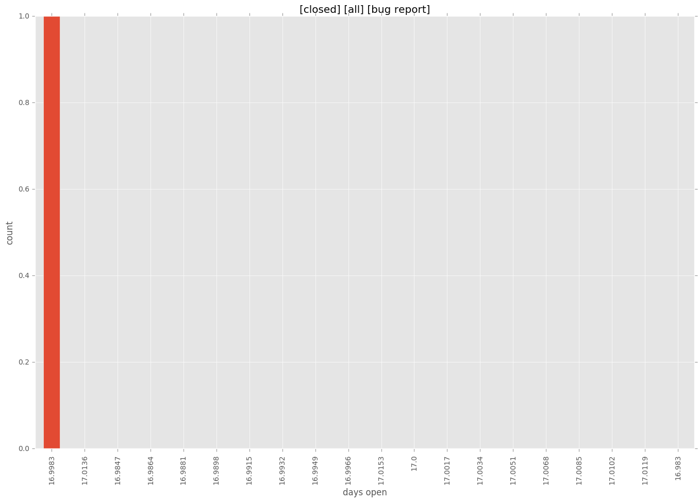

authors
- jedelman8
- GGabriele
maintainers
- jedelman8
- GGabriele
- privateip
- gundalow
contributors
- GGabriele : 75 commits
total issue counts
bugfix pull request: 2
pullrequest: 3
issue: 1
new plugin: 1
bug report: 1
issue history

pullrequest history

days open by issue type
all
count: 7
std: 5.73626724489
min: 0
max: 17
median: 4.0
mean: 5.28571428571
pullrequest
count: 0
std: nan
min: nan
max: nan
median: nan
mean: nan
bugfix pull request
count: 4
std: 2.30940107676
min: 0
max: 4
median: 2.0
mean: 2.0
issue
count: 0
std: nan
min: nan
max: nan
median: nan
mean: nan
new plugin
count: 2
std: 0.0
min: 6
max: 6
median: 6.0
mean: 6.0
bug report
count: 1
std: nan
min: 17
max: 17
median: 17.0
mean: 17.0
closures grouped by total days open
